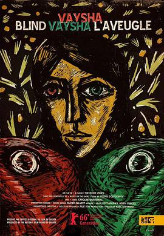

盲眼女孩 / Vaysha, l'aveugle
又名：看不见现在的维莎 / Blind Vaysha
VR版本和画风太棒了
作品信息
| 导演 | 西奥多·尤西弗 |
| 编剧 | 西奥多·尤西弗 / Georgi Gospodinov |
| 主演 | 卡罗利娜·达韦纳 |
| 类型 | 动画 / 短片 / 奇幻 |
| 制片国家/地区 | 加拿大 |
| 语言 | 法语 |
| 上映日期 | 2016-02-15(柏林电影节) |
| 片长 | 7分49秒 |
| IMDb | tt5559726 |
最后一次看到是 2026-08-12T21:11:26+08:00 · 豆瓣原页